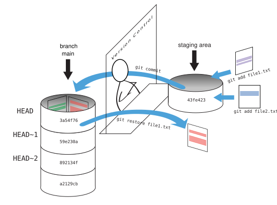

Exploring History
04 March 2025
Objectives
- Explain what the HEAD of a repository is and how to use it.
- Identify and use Git commit numbers.
- Compare various versions of tracked files.
- Restore old versions of files.
Questions
- How can I identify old versions of files?
- How do I review my changes?
- How can I recover old versions of files?

Head
You can refer to the most recent commit of the working
directory by using the identifier HEAD.
Before we start, let’s make a change to guacamole.md,
adding yet another line. Lets say we want to add a change we don’t want,
for example, let’s add in the instructions a phrase “Do nothing.”
$ nano guacamole.md
$ cat guacamole.mdNow look at the difference by typing
$ git diff HEAD guacamole.md
Note that HEAD is the default option for
git diff, so omitting it will not change the command’s
output at all (give it a try). However, the real power of
git diff lies in its ability to compare with previous
commits. For example, by adding ~1 (where “~” is “tilde”,
pronounced [til-duh]), we can look at the
commit before HEAD.
$ git diff HEAD~1 guacamole.mdIf we want to see the differences between older commits we can use
git diff again, but with the notation HEAD~1,
HEAD~2, and so on, to refer to them:
$ git diff HEAD~2 guacamole.md
We could also use git show which shows us what changes
we made at an older commit as well as the commit message, rather than
the differences between a commit and our working directory that
we see by using git diff.
$ git show HEAD~2 guacamole.mdWe can also refer to commits using those long strings of digits and
letters that both git log and git show
display. These are unique IDs for the changes, and “unique” really does
mean unique: every change to any set of files on any computer has a
unique 40-character identifier.
Typing out random 40-character strings is annoying, so Git lets us use just the first few characters (typically seven for normal size projects)
$ git diff f22b25e guacamole.md
Reverting changes
Let’s suppose we change our mind about the last update to
guacamole.md (the “ill-considered change” “Do
nothing”).
git status now tells us that the file has been changed,
but those changes haven’t been staged:
$ git statusWe can put things back the way they were by using
git restore:
$ git restore guacamole.md
$ cat guacamole.mdBy default, it recovers the version of the file recorded in
HEAD, which is the last saved commit.

If we want to go back even further, we can use a commit identifier
instead, using -s option:
$ git restore -s f22b25e guacamole.mdNotice that the changes are not currently in the staging area, and
have not been committed. If we wished, we can put things back the way
they were at the last commit by using git restore to
overwrite the working copy with the last committed version. We use the
. to mean all files.

Summary


Reverting changes
The command git revert is different from
git restore -s [commit ID] . because
git restore returns the files not yet committed within the
local repository to a previous state, whereas git revert
reverses changes committed to the local and project repositories.
git revert [commit ID]
Continue with